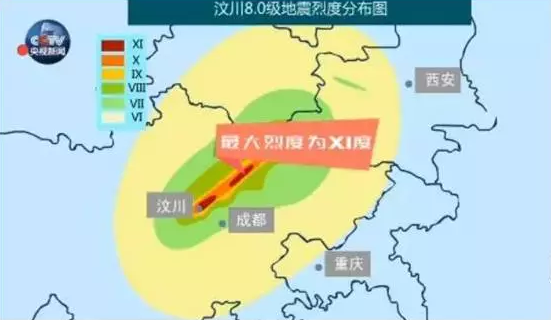
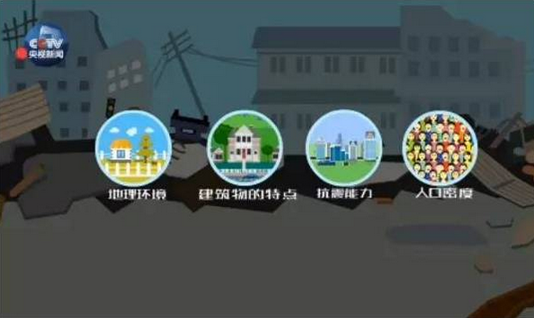
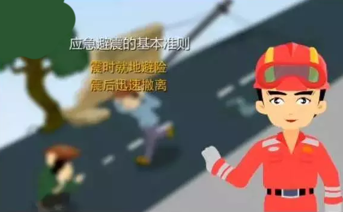

地震破坏程度与哪些因素有关？
造成一定人员伤亡和建筑物破坏的地震被称为破坏性地震。那么地震的破坏程度与哪些因素相关?我们平时如何搞好抗震设防，减轻震时人员伤亡和财产损失?
地震的破坏程度通常用烈度来表示，地震烈度是指地震对地表地貌和建筑物的破坏程度，是震后地震专家通过仪器记录和现场调查确定出来，为抗震救灾和灾区恢复重建提供的最重要参考依据。
我国将地震烈度分为XII（十二）度，最高XII（十二）度表现为“山川易景，地面一切建筑物普遍毁坏，地形剧烈变化，动植物遭毁灭”。通常VIII（八）度区就会造成较大破坏，2008年汶川8.0级地震最大烈度为XI（十一）度。
地震烈度首先与地震强度有关。震级越大，释放的能量也越大，造成的破坏也就越强。地震震级每相差1级，释放的能量相差约32倍。

地震烈度还与地震远近、震源深度密切相关。一个地震只有一个震级，但不同震中距上地震的烈度是不同的。一般来说，距离震中越远的地方破坏程度越小，破坏程度随着震中距的增加而逐渐降低。同样震级的地震，震源深度越浅，破坏性越强。我国造成重大人员伤亡的强震，大多是震源深度在70公里以内的浅源型地震。
地震破坏程度也与地震发生的时间密切相关。破坏性地震发生在夜间所造成的人员伤亡程度，平均比白天严重3到5倍，这和垮塌建筑内的人员密度成正比。
影响地震破坏程度的其他重要因素还包括地理环境、建筑物的特点和抗震能力、人口密度等。两个地震震级相当，释放能量基本相同，但可能由于各种因素影响，造成的破坏却是差别巨大。专家指出，一般来说，地理条件越优越（如云南景谷地震地势就比较平坦）、房屋建筑质量越好、抗震设防等级越高，地震造成的破坏就会越轻。因此，建造房屋时尽可能避开活动断层区域，努力提高房屋建筑质量和抗震设防能力，对减轻和避免地震灾害极为重要。
地震被埋如何紧急自救和互救？
重特大地震由于突发性和强大的破坏力，极易造成重大人员伤亡。中国地震局对我国重特大地震人员救援统计显示，自救和互救是震后减少人员伤亡最及时、最有效的方法。如1976年唐山大地震，震后被压埋人员约57万人，约有42万人是灾区群众通过自救互救脱险；汶川地震时，绵竹市东汽中学师生通过自救和互救营救出100多名幸存者。那么，地震时被埋如何科学自救和互救呢？
地震时被埋或被困废墟内，要因地制宜，及时镇定采取自救措施。如果部分肢体被埋压但双手可以活动，首先要用手清除头部、胸部的杂物，用手在头、胸部掏出一定的空间，保障呼吸畅通；再尽可能及时用身边可用的砖石、木棍或其它坚硬物品，建立起一个支撑体，稳定生存空间，防止余震时进一步塌落；如果灰尘太大或闻到煤气味时，要设法用湿衣物捂住口鼻，避免窒息或中毒。专家提醒，地震被压埋后，要特别注意保存体力，保持清醒，不要盲目呼救，要用砖、铁管等物敲打管道或墙壁。在确定上方有人时，再大声呼救。如果废墟内有生存空间，身体能够自行活动时，应尽力朝着有光或可能有水和食物的地方移动。如果受伤，可从衣物上撕下布条及时进行包扎，避免失血过多。为了延长生存时间，必要时自己的尿液也能起到解渴作用。如果多人同时被埋压，要互相鼓励，团结协作，共同商定自救计划并采取行动。
震后，在救援队伍暂未抵达时，积极互救是减轻人员伤亡最及时、最有效的办法。互救应遵循以下原则：“先易后难”——先救埋压较浅，容易救出的轻伤人员；“先近后远”——先救离自己最近的被压埋者；“先多后少”——先救压埋人员多的地方，如学校、医院、旅馆、商场等人员密集场所。营救中要首先使伤者头部暴露出来，并迅速清除口鼻内尘土，保持呼吸道畅通防止窒息，之后再刨挖伤者身体其他部位。营救过程中，要特别注意在使用锹、镐等工具时不要伤及被埋人员，更不要破坏被埋者周围主要的支撑物，防止进一步倒塌。对于脊椎损伤人员，搬动时切忌生拉硬拽，必须要用门板或硬木板抬出废虚。如被埋压者受伤严重、埋压较深、时间较长，可设法向其尽快输送水、食品和药品，以维持生命，等待专业人员援助。

地震发生时如何第一时间科学避震？
地震具有突发性、破坏性和难以预测性，那地震来了该怎么办? 是跑还是躲?在不同场合我们该怎样有效避震，降低伤亡风险?
地震发生时，首先要保持冷静，不要慌乱，快速判断自己所处位置和震动状况。国内外专家普遍认为：震时就地避险，震后迅速撤离，是应急避震的基本准则。
地震发生时，如果你所处的是平房或楼房一层，且室外比较开阔，可以力争迅速跑出室外避震；如果是楼房二层或以上，且室内避震条件和建筑质量较好，首先要选择室内避震，因为地震时震动时间短、强度大，人往往无法自主站立，很难迅速从楼内跑到室外，应优先选择立即躲避在室内的卫生间、储藏室、浴室等开间小、有承重墙或支撑物的地方，或者是坚固的桌子、床、茶几、沙发等家具旁，这些地方在房屋垮塌时容易形成三角空间。这时你要迅速伏地趴下，尽量蜷曲身体，降低身体重心;低头，用衣服、枕头等护住头颈，不要压住口鼻;或抓住身边牢固的物体，防止摔倒或身体移位。
专家提醒，地震发生时，特别要牢记绝不要在慌乱中选择跑向阳台、翻窗或跳楼，这一点极为重要。因为地震袭来时，门窗会迅速扭曲变形，这些地方都是地震时可能最先坍塌的地方。同时，中高楼层居民千万不要搭乘电梯逃生。
如果地震发生时你身处户外，则应迅速避开如楼房（特别是有玻璃幕墙的楼房）、立交桥、过街天桥、高烟囱和广告牌等这些高大建筑物;远离水坝、陡坡山崖、狭窄街道和危旧房屋;特别要注意避开变压器、高压线、电线杆，以防触电；不要在易燃易爆危险品仓库附近停留。

震后如何紧急规避常见次生灾害？
地震次生灾害是指强震后，因地面震动而引发的其他灾害。大致分为两大类：一是自然地貌破坏引发的，如滑坡、泥石流、地面塌陷、水灾、海啸等；另一种是建筑设施破坏引发的，如煤气管道破裂引发的火灾，道路破坏导致交通中断，还有疫病流行等。
据统计，山体崩塌、滑坡和泥石流是我国目前造成人员伤亡最多、最严重的地震次生灾害。5级左右的地震就可以诱发滑坡和泥石流，震级越大，诱发面积也越大。
那么震后，我们如何第一时间规避这些次生灾害可能带来的伤害呢？专家指出，山体滑坡、崩塌和泥石流发生时，一般都会有一些比较明显的征兆。如山体出现一些深度裂缝或裂缝持续增大；山体的树木或岩石短时间内出现移位、倾斜；山上的岩石和土体持续性滚落或发生多次小面积崩塌。泥石流大多出现在地震后遭遇持续强降雨的情况下。如果从地下或山谷传来的类似火车轰鸣声或闷雷式的声响及有轻微振动感，必须立即撤离，这很可能是即将发生泥石流的征兆。
如果遇到以上情况，应立即远离山体。如山体崩塌或滑坡正在发生，要立即向垂直于滑坡体或滚石方向的两侧跑，切不可顺着滚石方向往山下跑。如来不及逃避，可躲在结实的障碍物下或蹲在地沟、陡坎下躲避，并保护好头部。
当遭遇泥石流险情时，必须立即离开沟道、河谷地带，不能沿沟向下或向上跑，应立即向两侧山坡上逃生。不要上树躲避，因为泥石流的冲击和搬运能力极强，大树会被掀倒或连根拔起。
地震专家提醒，破坏性地震发生后，务必在震后及时转移至政府划定的安全区域。
|